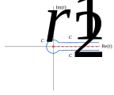

Gamma function
Riemann zeta connection
An interesting connection between the \(\Gamma\) and the Riemann zeta function, \(\zeta\), arises from: \[\int\limits_0^\infty t^{z-1}\exp(-\alpha t)dt=\frac{\Gamma(z)}{\alpha^z}\]
If we combine this with: \[\zeta(z)=\sum\limits_{n=1}^\infty \frac1{n^z}\] we get: \[\zeta(z)\Gamma(z)=\sum\limits_{n=1}^\infty \int\limits_0^\infty t^{z-1}\exp(-n t)dt \\ =\int\limits_0^\infty \frac{t^{z-1}}{\exp(t)-1}dt\]
This sketch using geometric summation needs some restrictions on \(z\). The zeta function definition restricts this, for now, to \(\mathrm{Re}(z)>1\). The \(\Gamma\) definition is, of course, slightly more expansive.
We can use a contour to increase the range of definition: 
This is similar to the contour we used in our Reflective interlude, except for the direction, and we have not included \(C_R\), the big circle. Also the integration variable is \(t\), not \(v\).
Let us assume for now that \(z\) is real and consider: \[\int\limits_C \frac{t^{z-1}}{\exp(t)-1}dt\] where \(C=C_1+C_r+C_2\). We make the integral around the real axis tight enough to exclude the poles arising from zeros of the denominator at \(2\pi ik, k\ne0,k\in\mathbb Z\).
The \(C_1\) integral is \(-\zeta(z)\Gamma(z)\), while that of \(C_2\) is \(\exp(2\pi(z-1))\zeta(z)\Gamma(z)\), assuming we can let \(r\rightarrow0\). The integral around \(C_r\) is less than \(r^{z-2}2\pi r\). This goes to zero as \(r\rightarrow0\) so long as \(z>1\). So in this region: \[\int\limits_C \frac{t^{z-1}}{\exp(t)-1}dt=2i\exp(i\pi z)\sin(\pi z)\zeta(z)\Gamma(z)\]
Using the Reflective interlude: \[\zeta(z)=\frac{\exp(-i\pi z)\Gamma(1-z)}{2\pi i}\int\limits_C \frac{t^{z-1}}{\exp(t)-1}dt\] This well defined for all \(z\), except at the poles of \(\Gamma\). These are at \(1-z\le0,1-z\in \mathbb Z\). But the \(\zeta\) is well defined for \(\mathrm{Re}(z)>1\), so the only possible singularity must be at \(z=1\). [The apparent poles for \(z=2,3,\dots\) must be cancelled by zeros of the contour integral.]
In fact the contour integral at \(z=1\) has no branch cut (\(C_1\) and \(C_2\) cancel against each other), so one is just left with \(C_r\): \[\int\limits_{C_r} \frac{t^{1-1}}{\exp(t)-1}dt\rightarrow\int\limits_{C_r} \frac{dt}t=2\pi i\] At the same time, \(\Gamma(1-z)\rightarrow1/(1-z)\), so the singularity is a simple pole with \(-1\) Cauchy residue. This means that \(\zeta(z)\rightarrow-1/(1-z)\), which has residue \(+1\).
We can evaluate \(\zeta\) at non-positive integers using, again, Cauchy residue calculus. The Bernoulli numbers are defined: \[\frac t{\exp(t)-1}=\sum\limits_{n=0}^\infty \frac{B_n}{n!}t^n\] For non-positive \(k\in\mathbb Z\): \[\int\limits_{C_r} \frac{t^{k-1}}{\exp(t)-1}dt\rightarrow\int\limits_{C_r} t^{k-2}\sum\limits_{n=0}^\infty \frac{B_n}{n!}t^ndt\] The integral residue comes from the term \(1/t\), i.e. only if \(k-2+n=-1\) or \(k=1-n\), giving \(2\pi iB_n/n!\). Hence: \[\zeta(1-n)=(-1)^{n-1}\Gamma(n)\frac{B_n}{n!}=(-1)^{n-1}\frac{B_n}n\] since \(\Gamma(n)=(n-1)!\). The \(n=0\) case is infinite, as expected from \(\zeta(1)\) being a pole. We can evaluate the analytic continuation \(\zeta(0)=B_1=-1/2\). For \(m\gt0\), \[\zeta(-2m)=(-1)^{2m}\frac{B_{2m+1}}{2m+1}=0\] from a well-known property of Bernoulli numbers. By contrast \[\zeta(-(2m+1))=-\frac{B_{2m+2}}{2m+2},m\ge0\] is non-zero.